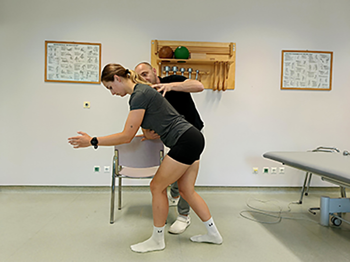
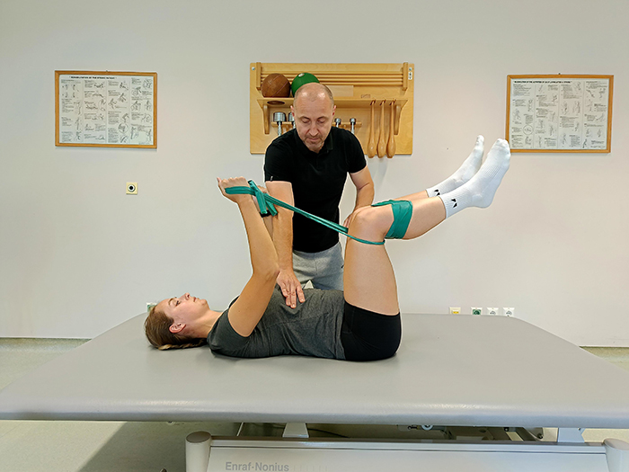
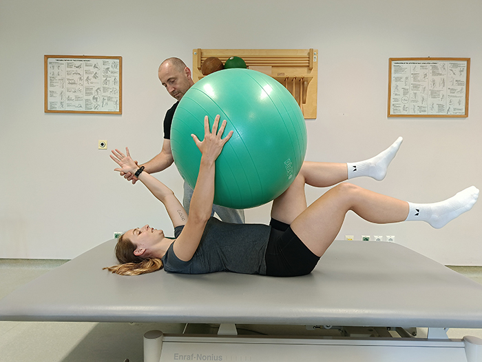

Drža predstavlja naravno sposobnost poravnave in položaja telesa. Običajno gre za samodejno prilagajanje položaja v prostoru, ki ga najbrž ne opazite, vendar vam lahko boljše zavedanje o drži pomaga pri učinkovitejšem gibanju.
Drža vsakega človeka je edinstvena. Držo uravnavamo s pomočjo našega živčnega sistema, ki upravlja gibalni aparat, predvsem pa mišice. Slaba drža povzroča mišično napetost, bolečine in zmanjšano gibljivost.
Vsako telo je nekoliko drugačno in ima sebi lastno držo. Lahko ste pozorni na varno sedenje ali gibanje, vendar se ne poskušajte z držo obremenjevati ves čas.
V odrasli dobi ne obstaja idealna drža, vendar govorimo o pravilni oziroma primerni drži. Pravilna drža predstavlja sposobnost, da med mirovanjem in gibanjem ohranimo naravne krivine hrbtenice.
Hrbtenica ima tri naravne krivine – eno v vratu (vratna hrbtenica), na sredini hrbta (prsna hrbtenica) in v spodnjem delu hrbta (ledvena hrbtenica). Te tri krivine dajejo vaši hrbtenici obliko nežno ukrivljene velike črke S.
Dobra drža vam lahko pomaga preprečiti pogoste bolečine v hrbtu, vratu in ramenih, pri športu pa lahko pomaga preprečiti športne poškodbe.
Zmanjšanje obremenitev sklepov in hrbtenice je lahko tudi rezultat boljše drže. Posledica neprimerne drže so tudi glavoboli, omejitve gibljivosti v sklepih in slabše ravnotežje.


